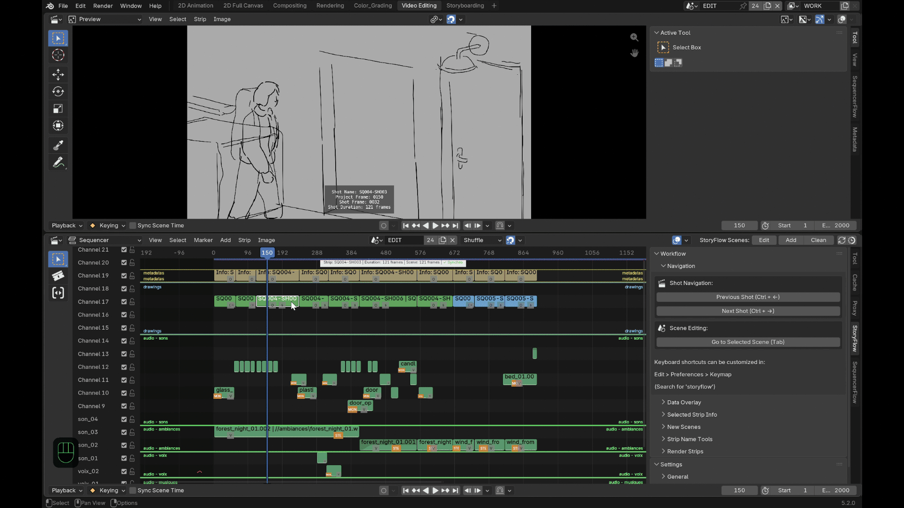
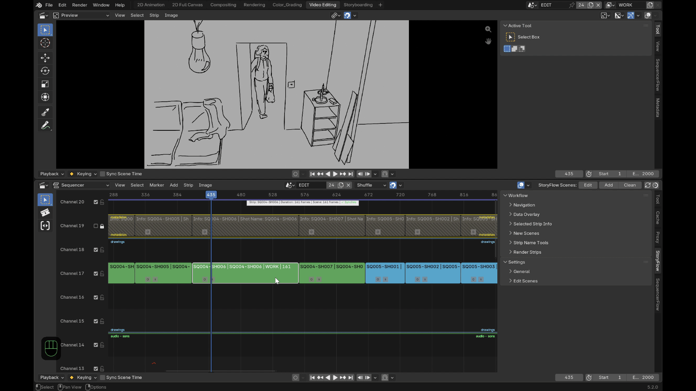
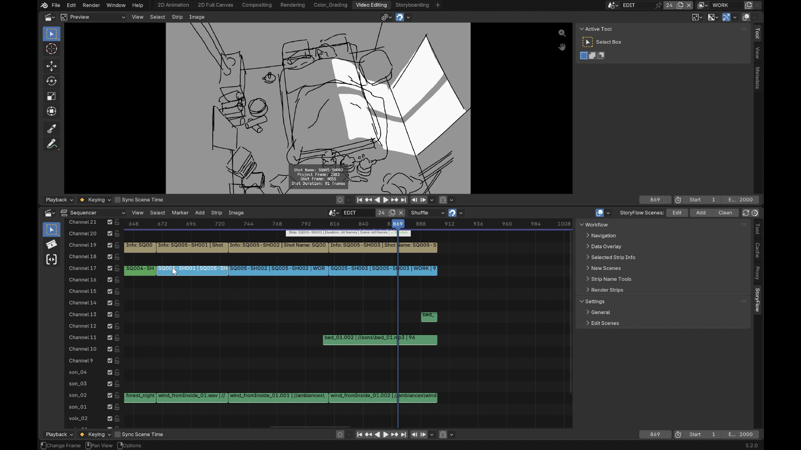
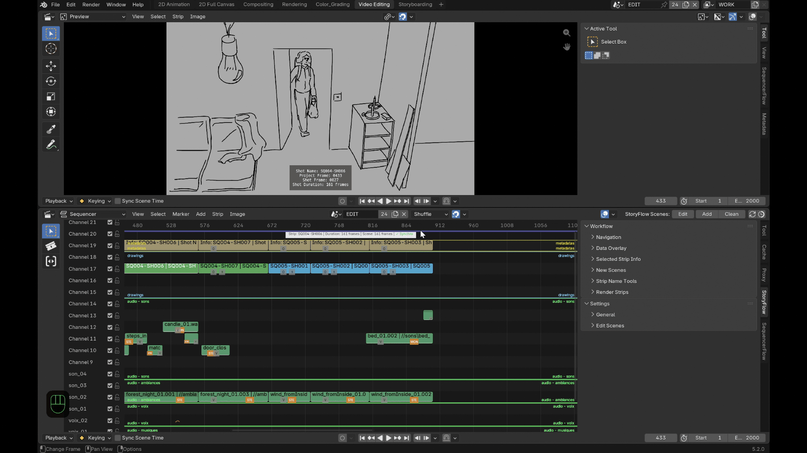

Features¶
Navigation¶

- Tab switches between the selected shot and its drawing scene,
landing at the matching frame in both directions — not just switching
scenes. Tab also swaps between the two workspaces set in the **Settings
General** panel ("Video Editing" and "2D Animation" by default, but any pair of workspaces works), and points the drawing workspace's own embedded Sequencer at the main edit scene (handy if your animation-scene template keeps the VSE visible there too).
- Ctrl+Alt+←/→ moves between the current shot's animation keys first; once you've reached the last (or first) key, the next press moves on to the next (or previous) shot instead.
- Alt+←/→ moves between drawing scenes directly, without leaving the drawing context.
Duration sync, both ways¶

Resize a drawing scene's frame range and its strip in the edit follows; resize the strip and the drawing scene follows.
Three explicit ways to extend or shrink a shot in the edit:
- Default (drag a handle, or double-click without the option checked): trims the neighboring shot wherever it would overlap.
- Ctrl held while dragging a handle: pushes every following (or preceding) shot, across every channel, instead of trimming.
- Double-click a handle opens a popup to add or remove an exact number of frames, with the same choice to push/pull the following or preceding shots if needed.
Shared-scene protection¶
If two shots ever end up pointing at the same drawing scene — a copy/paste across files, a manual scene reassignment — a red marker appears directly on both strips so it doesn't go unnoticed. While a drawing scene is shared this way, editing the in/out points of the shots involved (or the drawing scene's own duration) is locked to prevent silently corrupting one of them; the lock lifts itself automatically once the sharing is resolved.
A live overlay on the selected shot¶
A small on-screen overlay shows the selected shot's name and duration at a glance in the VSE, without opening a side panel — and if more than one shot is selected, it also shows how many.
Sound follows the picture¶
Audio overlapping a shot gets copied into its drawing scene automatically, correctly repositioned, with pitch, pan, volume and speed preserved — so you can hear timing while you draw, with no manual copying. Muted audio tracks can be excluded from this copy.
Metadata burned onto the image¶
storyFlow can burn metadata directly onto the frame itself. Each piece of information below has its own on/off toggle, so you pick exactly which ones show rather than getting them all at once or none:
- Shot name.
- Project-relative frame number.
- Shot-relative frame number (starting at 0 or at 1, your choice).
- Duration.
- Start/end frame markers.
Production tools¶

Beyond the day-to-day flow, storyFlow also covers the housekeeping that comes with a real production:
- Add, one shot or several at once — two different behaviors depending on what's selected:
- A shot is selected: the new one lands right after it, named by incrementing the trailing number found on the selected shot's own name — the naming options in the sidebar are ignored entirely for this path.
- Nothing is selected: the new shot is named from the sidebar's own base name/prefix/suffix instead, and a popup additionally lets you place it at the playhead or at the end of the timeline, pick its channel, and set how many to add at once.
Either way, every shot it creates is its own independent scene.

- Batch rename, on the selection or the whole timeline at once: either find/replace across existing names, or set a new base name with an optional prefix and a suffix — that suffix is either a fixed piece of text you set, or auto-numbering instead, numbered in timeline order (not selection order) so the sequence always reads correctly.
- Clean up unused drawing scenes in one click, with per-scene protection for anything you want kept regardless.
- Render straight from the timeline, split into segments wherever the topmost visible strip actually changes — so shots deliberately layered across channels render correctly instead of one silently winning for its whole original duration. Two modes, picked by the output format:
| Format | What happens |
|---|---|
| Video (an FFmpeg format) | Each segment renders straight to one video file. |
| Image (any image format — OpenEXR included, still "image" rendering, not a third mode) | A few extra options appear: a minimum-spacing step between the drawing's actual keyframes (objects, Grease Pencil, NLA, scene markers) rather than a fixed interval, real-frame vs. consecutive numbering, and an optional dedicated subfolder per segment. |
Either way, segments are named after the topmost strip or with your own prefix/suffix/numbering scheme (same options as batch rename), plus a frame-range suffix as an anti-collision safeguard, and the result can be dropped back into the timeline as new strips automatically.